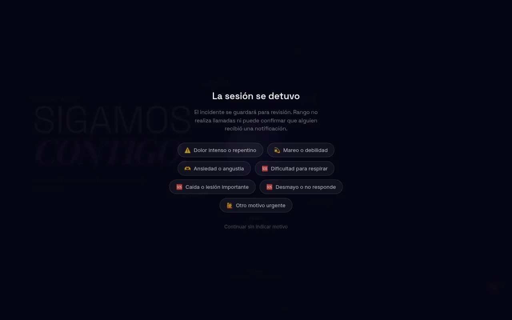
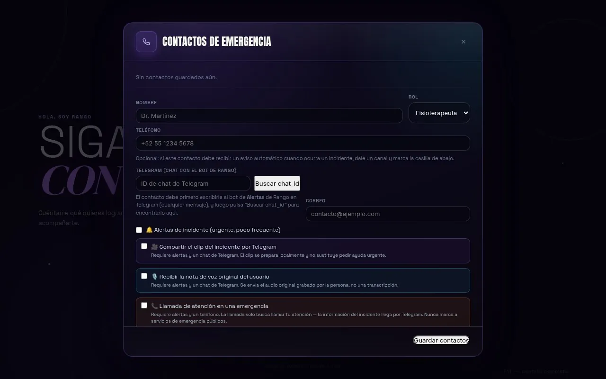

Inicio / Tecnología / Seguridad
Seguridad
La seguridad física y la protección de datos forman parte del diseño de cada sesión.
Show Me iSkills es una herramienta de acompañamiento y seguimiento. No sustituye la valoración de profesionales de la salud ni constituye por sí misma un sistema de diagnóstico médico.
Consentimiento para funciones sensibles
El reconocimiento facial y el uso de datos clínicos requieren autorización explícita.
Contactos de emergencia
Cada perfil administra sus propios contactos y permisos de notificación.
Registro de incidentes
El botón «Necesito ayuda» detiene la sesión y guarda el incidente, aunque no haya Internet.
Notificaciones configuradas por el usuario
Las alertas, clips y notas de voz solo se envían si el usuario las activa.
Protección de información
Los perfiles se separan entre sí y las acciones profesionales quedan auditadas.
Procesamiento local cuando corresponde
La visión se procesa en el equipo; solo se conecta a servicios externos cuando la función lo requiere.
Ayuda urgente
«Necesito ayuda», dentro y fuera de la sesión.
La sesión se detiene, se registra el motivo y, ante un peligro inmediato, la aplicación indica llamar al número de emergencias local. Show Me iSkills no realiza llamadas ni puede confirmar que alguien recibió una notificación.


Rehabilitación
Supervisión profesional en cada plan.
- Consentimiento del paciente.
- Evaluación revisada por un profesional verificado.
- Plan de rehabilitación versionado y aprobado.
- Autorización de un solo uso para cada sesión.
- Bitácora de acciones profesionales y del sistema.